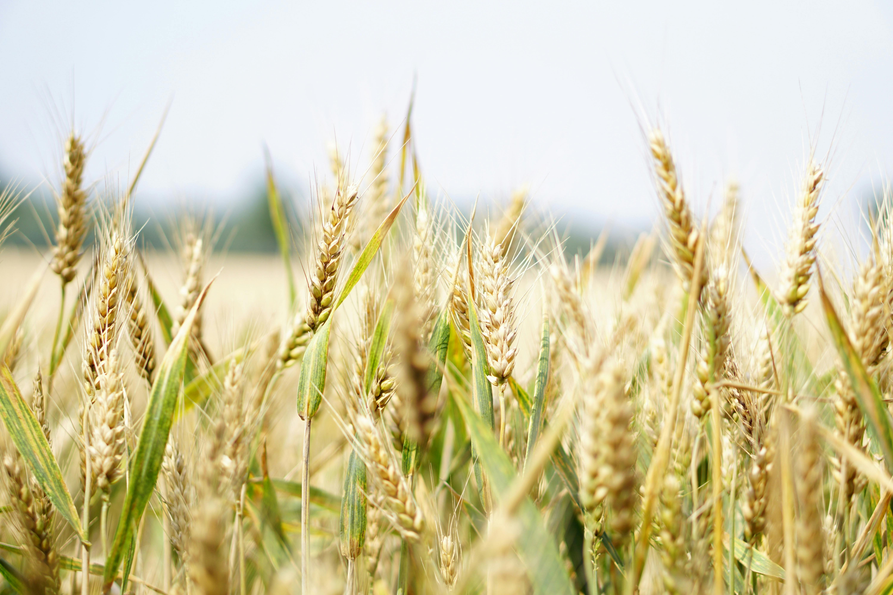
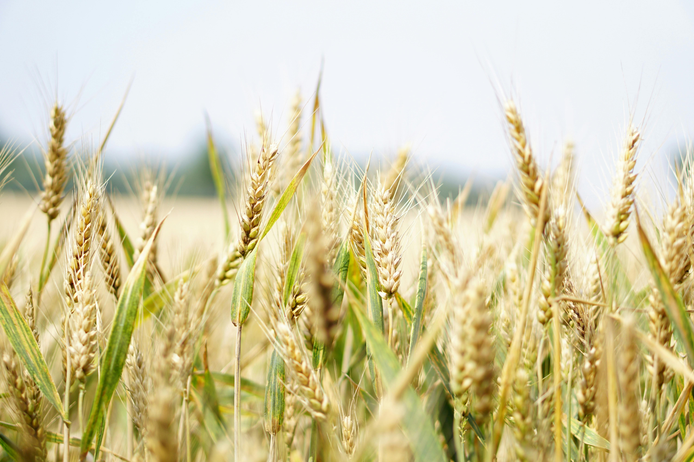

carbohydrate
carbohydrate molecules are made up of hydrogen atoms, oxygen, and carbon.
Therefore, they can be divided into polysaccharides, monosaccharides, and disaccharides. Examples of carbohydrate foods are;
- rice
- bread
- yam
- corn
- wheat


carbohydrate molecules are made up of hydrogen atoms, oxygen, and carbon.
Therefore, they can be divided into polysaccharides, monosaccharides, and disaccharides. Examples of carbohydrate foods are;
protein molecules comprise hydrogen, oxygen and hydrogen, carbon, and nitrogen.
This nitrogen is an essential part of the amino acids needed for our body.


one molecule of fat is usually made of several fatty acids.
Fats regulate energy and help with temperature regulation and vitamin absorption. Examples of fatty foods are;


minerals can be defined as chemical elements that are needed by living things.
Minerals represent various functions like building blocks for our muscles, bones, and teeth. Examples of mineral foods are;


fiber is defined as a type of carbohydrate that is not absorbed by human beings. Fiber in the diet is usually made up of cellulose.
fiber in the diet is usually made up of cellulose. Examples of fibre foods are;
 

vitamins are another nutrient that is not needed in large quantities but plays an essential role in our body.
Examples of vitamin foods are;